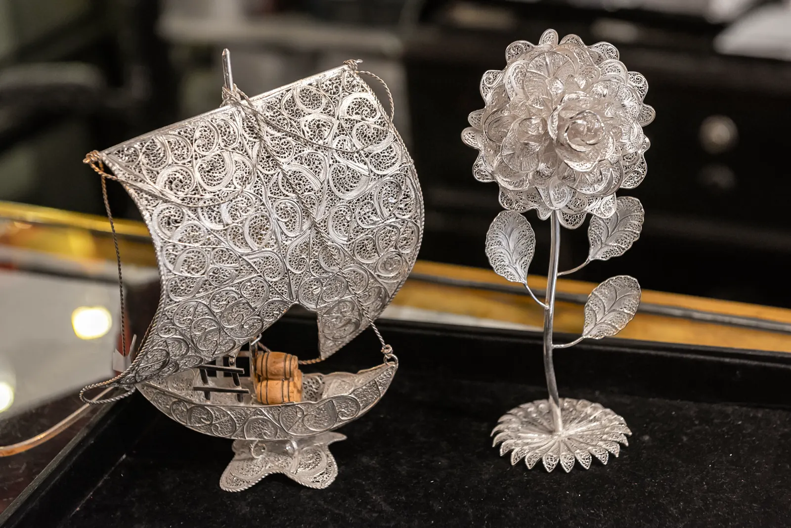
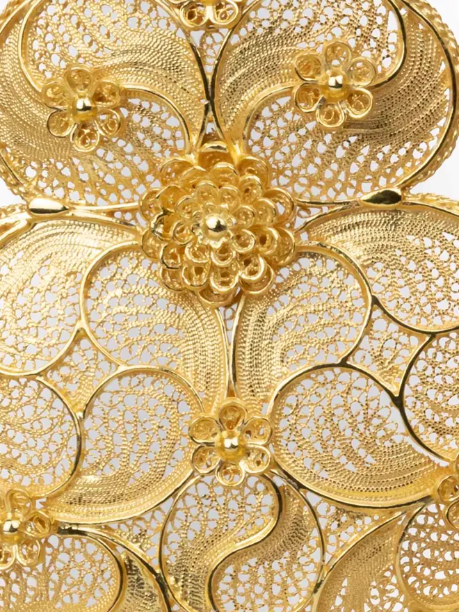
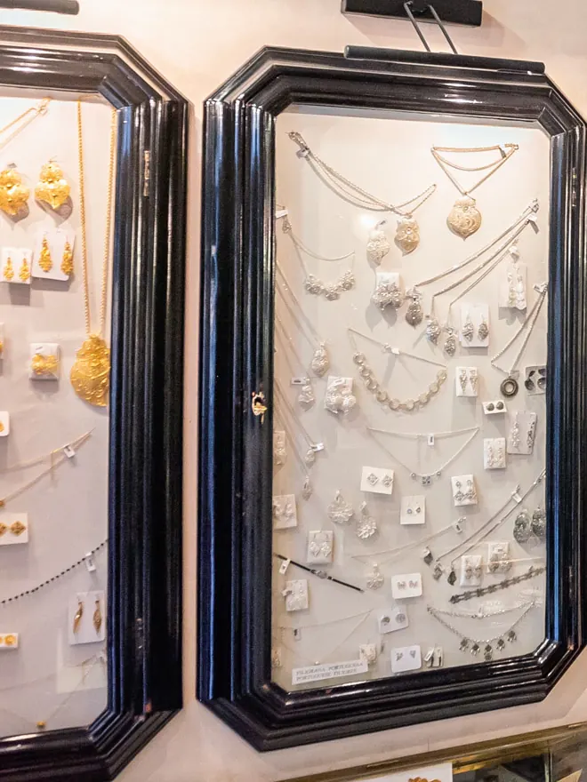
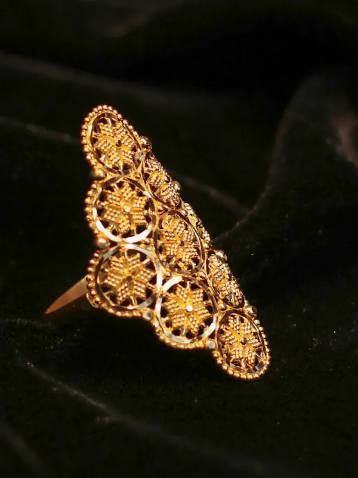
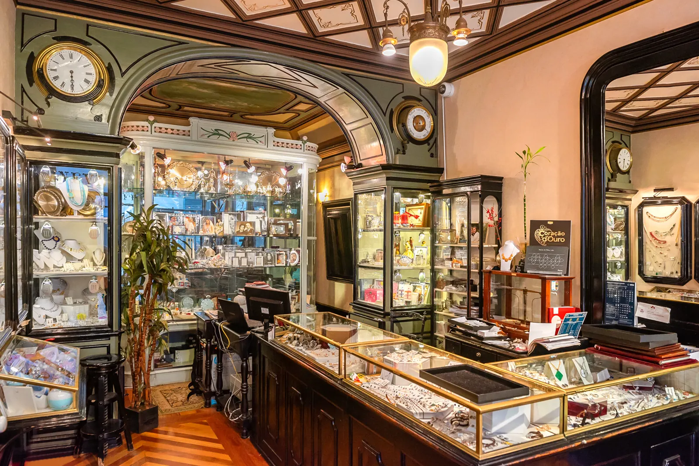
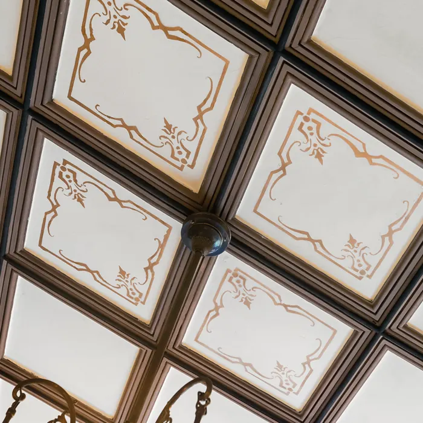
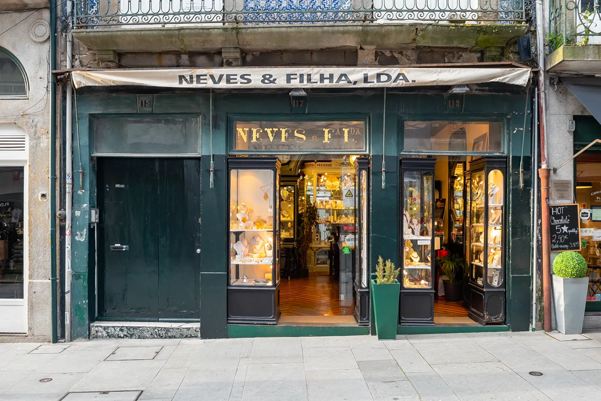

Filigrana portuguesa, na Rua das Flores.
Ourivesaria de família, há mais de 150 anos. Corações, brincos, colares e anéis.

Ouro e prata, trabalhados em fio.
Peças clássicas da joalharia portuguesa, para oferecer ou para ficar na família.

Corações de filigrana
O coração de Viana, símbolo da filigrana portuguesa.

Colares e brincos
Na vitrine da loja, peça a peça.

Anéis
Clássicos, ou feitos por medida.

Entrar aqui é voltar atrás no tempo.
Loja Porto de Tradição. O balcão de madeira e vidro, os tetos trabalhados e os espelhos são os originais. Num pequeno livro, os clientes deixam as suas histórias.


Rua das Flores, 115–119
A dois passos da Estação de São Bento. Entre para ver as vitrines, ou ligue a perguntar por uma peça.